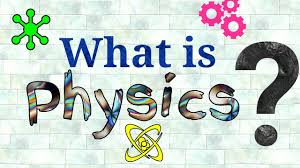

Apa itu Fisika?
Fisika merupakan salah satu mata pelajaran jurusan IPA yang terbilang sulit dipahami dan sangat membosankan. Namun pelajaran fisika juga bisa menjadi keahlian kita ketika kita bisa belajar dengan sungguh-sungguh. Pengertian fisika yaitu berasal dari kata “physic” yang artinya yaitu alam. Jadi ilmu fisika yaitu sebuah ilmu pengetahuan dimana didalamnya mempelajari tentang sifat dan fenomena alam atau gejala alam dan seluruh interaksi yang terjadi didalamnya. Untuk mempelajari fenomena atau gejala alam, fisika menggunakan proses dimulai dari pengamatan, pengukuran, analisis dan menarik kesimpulan. Sehingga prosesnya lama dan berbuntut panjang, namun hasilnya bisa dipastikan akurat karena fisika termasuk ilmu eksak yang kebenarannya terbukti.
Tujuan mempelajari ilmu fisika yaitu agar kita dapat mengetahui bagian dasar dari benda dan mengerti interaksi antar benda-benda, serta mampu untuk menjelaskan mengenai fenomena alam yang terjadi. Dari beberapa pengertian fisika menurut para ahli, maka dapat dikatakan bahwa konsep-konsep dasar fisika tidak hanya mendukung perkembangan ilmu fisika saja, namun juga mendukung perkembangan ilmu lain dan teknologi. Ilmu fisika menunjang riset murni dan terapan. Beberapa ahli geologi dalam risetnya menggunakan metode gravimetric, akustik, listrik dan mekanika. Selain itu peralatan modern di rumah sakit juga menerapkan ilmu fisika. Ahli astronomi juga membutuhkan ilmu fisika, begitu pula dengan ahli meteorology, oseanologi dan sesmologi.
Di zaman modern sekarang ini ilmu fisika tentu dapat diterapkan di berbagai bidang yang ada di dunia. Bahkan, ilmu kedokteran pun dapat menggunakan ilmu fisika sebagai dasar pengetahuan dan dasar bertindak. Contohnya, bagaimana pesawat data tertahan di udara? Bagaimana siaran Tv dapat dilihat dan dinikmati di wilayah yang jauh? Pertanyaan-pertanyaan seperti itu dapat dijawab oleh fisika dengan rumus-rumus yang bisa membantu manusia mengambil kesimpulan tentang fenomena alam yang terjadi. Ilmu fisika terbagi menjadi dua, yaitu fisika modern dan fisika klasik. Fisika modern muncul setelah penemuan Albert Einstein mengenai atom dan sebagainya. Sementara itu, fisika klasik merujuk pada bunyi, gerak dan lain-lain.